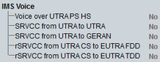

IMS Voice
This section provides UE capabilities for voice connections via IP multimedia subsystem (IMS).

IMS voice capabilities
Indicates the UE IMS voice capability as defined in 3GPP TS 25.331, section 10.3.3.14b.
- "Voice over UTRA PS HS": indicates whether the UE supports IMS voice over UMTS terrestrial radio access packet switched HSPA (UTRA PS HS) connections
- "SRVCC Support from UTRA to UTRA": indicates whether the UE supports the single radio voice call continuity (SRVCC) from UTRA PS HS to UTRA CS
- "SRVCC Support from UTRA to GERAN": indicates whether the UE supports SRVCC from UTRA PS HS to GERAN CS
- "rSRVCC Support from UTRA CS to EUTRA FDD": indicates whether the UE supports reverse single radio voice call continuity (rSRVCC) handover from UTRA CS to EUTRA FDD
- "rSRVCC Support from UTRA CS to EUTRA TDD": indicates whether the UE supports rSRVCC handover from UTRA CS to EUTRA TDD